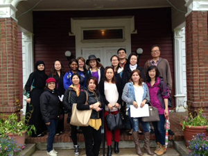
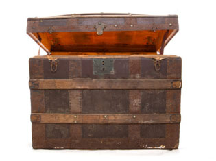
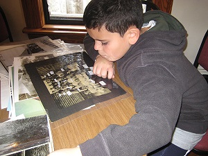
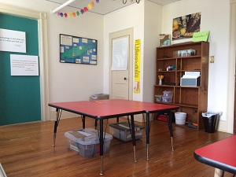

Bring Your Class
The goal of BHS is to enhance the New York State Common Core Curriculum Standards in Social Studies through interactive programs for all school age students. Many of the programs utilize archival material from our teaching collection. By using primary and secondary sources, students are encouraged to become active historians. They are given the opportunity to examine authentic documents, photographs, maps, and artifacts. They are motivated to hypothesize, interpret, and use their deductive reasoning skills. Programs are tailored to meet the age and interest level, as well as the special needs of visiting students.
Grandmother's Trunk
In this program, students are given the chance to explore an antique trunk filled with authentic artifacts. By examining its contents, students learn about life as it was in the early 1900s in Queens. They are asked to analyze and compare life as it existed then to life as it is today. The contents of the trunk include vintage photographs of children at play, clothing, toys, household items, school books, etc. Students are invited to play with the toys from that era. In addition, fourth and fifth grade children are introduced to fundamental research skills such as brainstorming, analysis, and evaluation using primary and secondary documents.
Recommended Grades: 2 to 5Investigative Research
Junior and Senior High School students are invited to explore BHS’s teaching collections and assume the role of “archivist-for-a-day”. They are given historical problems to solve and must use archival material and critical thinking skills to solve them. In doing so, they expand their knowledge of local history and develop their documentary research skills.
Recommended Grades: 6 - 12Digging Up the Past
This program is dedicated to the study of the Matinecock people, this region’s earliest indigenous settlers who were part of the Algonquin nation. BHS’s permanent exhibit Native Bayside complements the program and provides a rich backdrop for students to learn how artifact are analysed, recorded, preserved, and stored. The inclusion of a sandbox archaeology workshop using tools and materials of archaeologists provoke students to interactively explore areas of science, anthropology, and sociology.
Recommended Grades: 4 - 5| Capacity | Length (min) | Cost | |
|---|---|---|---|
| Grandmother's Trunk | 30 | 90 | $6 per person |
| Investigative Research | 30 | 90 | $6 per person |
| Digging Up the Past | 24 | 90 | $8 per person |
Please call three weeks in advance to reserve date and time.